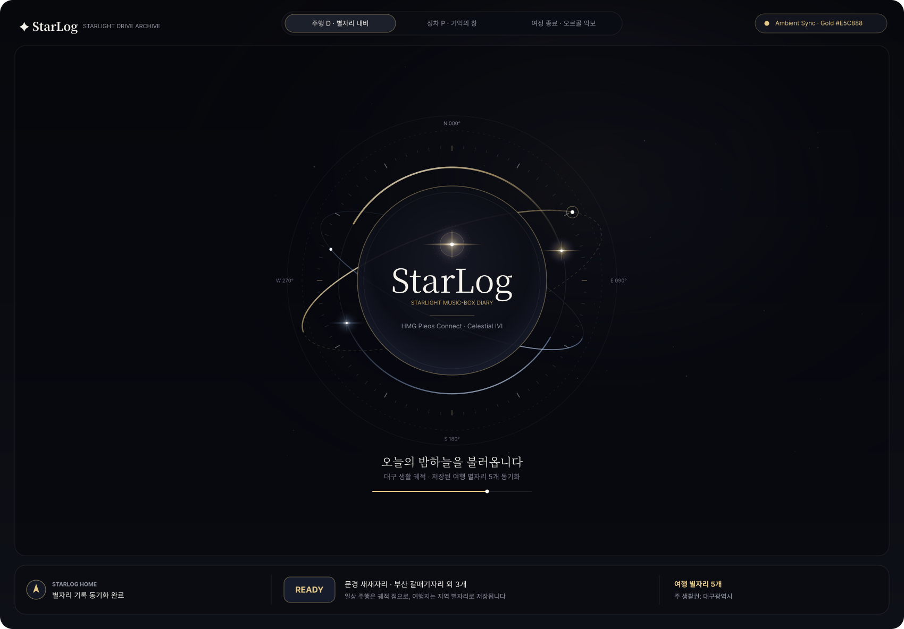
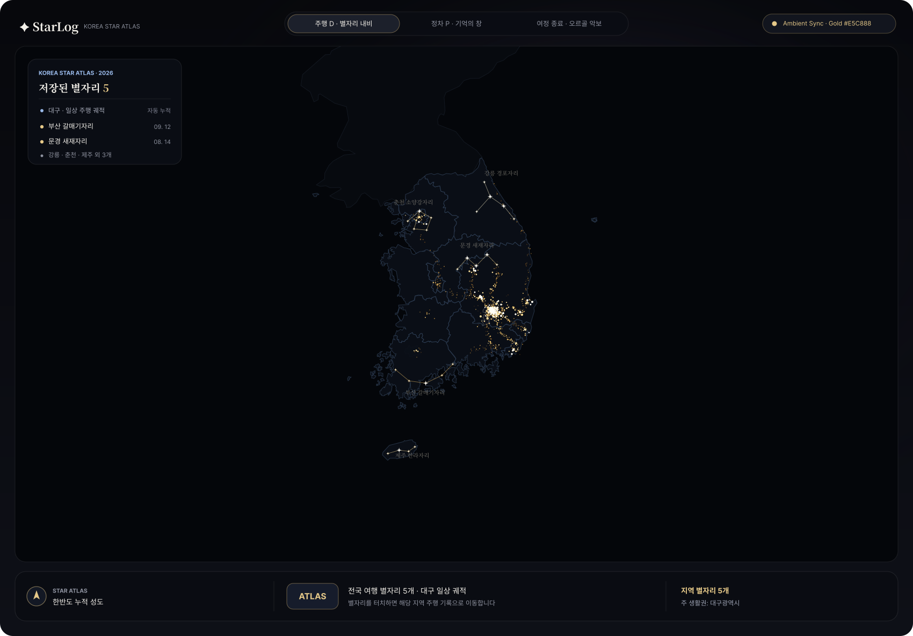
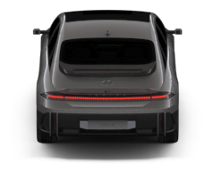

▶ 여정 시작
DEMO REPLAY · 대구 출발 → 문경 새재
시연용 재생 데이터로 7개 경유 별을 기록합니다

DEMO REPLAY · 시연 재생 데이터
7개의 별을 모두 기록했습니다
자동 완료되지 않습니다 · 여정을 직접 종료하면 별자리가 만들어집니다
여정 종료 · 별자리 만들기
◁ 이전 별자리
다음 별자리 ▷
CONSTELLATION FORGING · 출발 → 경유 → 도착
오늘의 별자리 작성
경유 노드 0 / 7
TRIP ROUTE → CONSTELLATION TIMELINE
출발지 → 경유지 → 도착지 연결
TODAY TRIP CONSTELLATION · P
오늘의 별자리
SIMILARITY MATCH
S
MUNGYEONG MELODY · DEMO MOCK
여정 멜로디
별자리 이름은 위치 정보 기반으로 자동 생성됩니다
✦ StarLog
3D CELESTIAL NAVIGATION
DEMO REPLAY
주행 D · 별자리 내비
정차 P · 기억의 창
여정 종료 · 오르골 악보
Ambient Sync · Gold #E5C888
▲
확정 멜로디 편곡 설정
확정한 기본 멜로디로만 생성합니다 · 음원은 DEMO MOCK 서버에서 만들어집니다
장르
리듬
악기
TEMPO 88 BPM
취소
AI 음악 생성 · DEMO MOCK